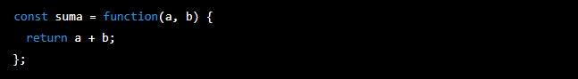

-
Crear 4 funciones que reciban 2 parámetros numéricos de cualquier tipo, distinto a 0: (Para cada uno de los llamados de las funciones, pasar los dos argumentos numéricos y visualizar el retorno en consola.)
- a) la función debe retornar la suma de los dos operandos
- b) la función debe retornar la resta de los dos opernados
- c) la función debe retornar la multiplicación de los dos operandos
- d) la función debe retornar la división de los dos operandos
- Crear una función que reciba los siguientes parámetros: nombre, apellido, edad, direccion y telefono. (Retornar como cadena de caracteres, la información del usuario. Podés usar \n para generar saltos de línea. Luego al llamar a la función, pase los 5 argumentos y visualice en consola el dato retornado.)
Consignas:
Anotaciones:
Temario de la clase:
- Funciones y propiedades basicas
- Scope
- Funciones anonimas
- Funciones Flecha
Funciones y propiedades basicas:
En JavaScript, una función es un bloque de código que se puede reutilizar varias veces. Las funciones tienen un nombre y pueden tener parámetros de entrada, también conocidos como argumentos. Las funciones se pueden llamar desde diferentes partes de un programa para ejecutar el código que contienen.
Hay tres formas de declarar una función en JavaScript:
Función declarativa: se declara con la palabra clave "function" seguida del nombre de la función y una lista de parámetros entre paréntesis, y se termina con un bloque de código entre llaves. Por ejemplo:
Función de expresión: se asigna a una variable y se puede usar como una función anónima. Por ejemplo:
Función de flecha: es una forma abreviada de escribir una función de expresión. Se escribe con la palabra clave "function" seguida de una flecha y un bloque de código entre llaves. Por ejemplo:

Las funciones también tienen propiedades y métodos especiales que se pueden utilizar para realizar tareas específicas. Algunas de estas propiedades y métodos incluyen:
- arguments: es un objeto que contiene una lista de los argumentos pasados a la función.
- call(): permite llamar a una función con un valor this específico y argumentos dados.
- apply(): permite llamar a una función con un valor this específico y un arreglo de argumentos.
- bind(): crea una nueva función con un valor this fijo y argumentos dados.
- length: devuelve la cantidad de argumentos que espera la función.
- name: devuelve el nombre de la función.
Las funciones también pueden tener un valor de retorno, que es el valor que se devuelve cuando se llama a la función. Si una función no tiene una declaración de retorno explícita, se devuelve el valor undefined de forma predeterminada.
Scope:
En JavaScript, el scope hace referencia al alcance de una variable o función en un programa. Es decir, indica en qué partes del código se puede acceder a una variable o función y cómo se pueden utilizar.
Hay dos tipos de scope en JavaScript: el scope global y el scope local.
El scope global se refiere al alcance de una variable o función en todo el programa. Las variables y funciones declaradas fuera de cualquier función tienen un scope global y se pueden acceder desde cualquier parte del programa. Sin embargo, las variables declaradas con la palabra clave "var" tienen un scope global, incluso si se declaran dentro de una función. Por ejemplo:
El scope local se refiere al alcance de una variable o función dentro de una función específica. Las variables y funciones declaradas dentro de una función tienen un scope local y sólo se pueden acceder desde dentro de esa función. Por ejemplo:
En JavaScript, también existen bloques de código que tienen un scope local, como los bucles "for" y las sentencias "if". Las variables declaradas dentro de estos bloques tienen un scope local y sólo se pueden acceder desde dentro del bloque. Por ejemplo:
En JavaScript, también existe la palabra clave "let" para declarar variables. Las variables declaradas con "let" tienen un scope local y sólo se pueden acceder desde dentro del bloque en el que se declaran. Por ejemplo:

Es importante tener en cuenta que el scope de una variable o función no se puede cambiar una vez que ha sido definido. Por ejemplo, si una variable tiene un scope global, no se puede convertir en una variable con scope local y viceversa.
El concepto de scope es importante en JavaScript porque afecta a la forma en que se pueden utilizar las variables y funciones en un programa. Si una variable o función tiene un scope global, se puede acceder y utilizar desde cualquier parte del programa, lo que puede resultar útil para compartir datos o funcionalidades entre diferentes partes del código. Sin embargo, también puede resultar peligroso utilizar variables o funciones globales, ya que pueden ser modificadas o sobreescritas por cualquier parte del código, lo que puede causar errores o comportamientos inesperados.
Por otro lado, si una variable o función tiene un scope local, sólo se puede acceder y utilizar desde dentro de la función o bloque en el que se declara, lo que puede ayudar a proteger la integridad de los datos y a evitar errores.
En resumen, el scope en JavaScript es un concepto importante que determina el alcance y accesibilidad de las variables y funciones en un programa. Es importante tener en cuenta el scope de las variables y funciones al escribir código para evitar errores y asegurar una correcta ejecución del programa.
Funciones Anonimas
En JavaScript, una función anónima es una función sin un nombre. Las funciones anónimas se pueden utilizar para crear funciones "al vuelo" sin tener que asignarles un nombre. Las funciones anónimas se pueden usar en diferentes contextos y son muy útiles para crear funciones que se van a usar sólo una vez.
Hay diferentes formas de declarar una función anónima en JavaScript, pero la forma más común es como una función de expresión:

Otra forma de declarar una función anónima es usando la sintaxis de función de flecha:
Las funciones anónimas también pueden tener parámetros de entrada, que se escriben entre paréntesis después del nombre de la función:
Una vez que se ha declarado una función anónima, se puede utilizar de la misma forma que cualquier otra función, llamándola y pasando los argumentos necesarios:
Las funciones anónimas también se pueden utilizar como argumentos de otras funciones, como por ejemplo en el método "map()" de los arreglos, que aplica una función dada a cada elemento de un arreglo y devuelve un nuevo arreglo con los resultados:
En resumen, las funciones anónimas son una forma útil de crear y utilizar funciones sin tener que asignarles un nombre. Se pueden utilizar en diferentes contextos y son muy útiles para crear funciones que se van a usar sólo una vez.
Funciones Flecha
Las funciones flecha son una forma abreviada de escribir una función en JavaScript. Se escriben con la palabra clave "function" seguida de una flecha y un bloque de código entre llaves. Por ejemplo:
Las funciones flecha tienen algunas características y ventajas únicas en comparación con las funciones declarativas y de expresión tradicionales:
- No tienen un nombre: las funciones flecha no tienen un nombre asignado, lo que las convierte en funciones anónimas. Esto puede ser útil para crear funciones que se van a usar sólo una vez.
- No tienen un valor de "this": las funciones flecha tienen un valor de "this" que está ligado al contexto en el que se declaran, lo que las hace más fáciles de usar en contextos donde el valor de "this" puede cambiar.
- Son más cortas: la sintaxis de las funciones flecha es más corta que la de las funciones declarativas o de expresión tradicionales, lo que las hace más legibles y fáciles de escribir.
- No pueden ser usadas como constructoras: las funciones flecha no pueden ser usadas como constructoras con la palabra clave "new", lo que significa que no se pueden usar para crear nuevos objetos con el operador "new".